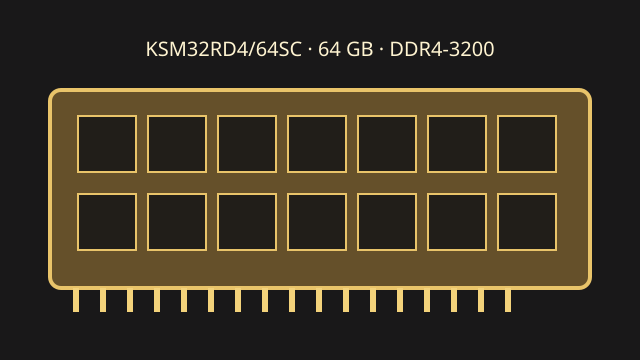

[ KINGSTON SERVER PREMIER // MODEL RECORD ]
KSM32RD4/64SC
Kingston's 64 GB Server Premier DDR4 Registered DIMM is intended for qualified server memory subsystems. ECC capability does not make this registered module compatible with every ECC-capable workstation.

Model specifications
| Capacity / module | 64 GB; 288-pin DDR4 DIMM |
|---|---|
| Rank / chip organization | 2Rx4 dual rank; x72 module organization (64 data + 8 ECC bits), using x4 DRAM devices. |
| Speed / JEDEC | DDR4-3200, 3200 MT/s (PC4-25600R); JEDEC CL22-22-22. |
| Voltage | 1.2 V nominal VDD/VDDQ. |
| ECC / buffering | ECC Registered DIMM (RDIMM) with registered command/address bus. |
| Platform compatibility | Requires a system validated for 64 GB 2Rx4 DDR4 RDIMMs, capacity per channel and 3200 MT/s operation. Intel Xeon Scalable 3rd Gen supports DDR4 up to 3200 MT/s; the board's QVL, BIOS and CPU/DIMM population rules remain decisive. Never infer SKU qualification from CPU family alone. |
Service and compatibility notes
- Check the server service manual for supported RDIMM capacities, rank/density, slots and channel order; registered and unbuffered DIMMs are different electrical classes.
- Mixed-speed populations normally operate at the supported common rate; follow the system vendor's rules.
- Retain the full module label and SPD dump to distinguish revisions and document ECC/error-counter observations.
Manufacturer & standards sources
- Kingston — KSM32RD4/64SC product datasheetModel-level capacity, organization, timing and voltage reference.
- Kingston — Server Premier memory product familyManufacturer product-family source.
- Intel — Xeon Gold 6338 specificationsDDR4 CPU memory-controller context; no exact-DIMM QVL claim.
- JEDEC — JESD79-4 DDR4 SDRAM standard